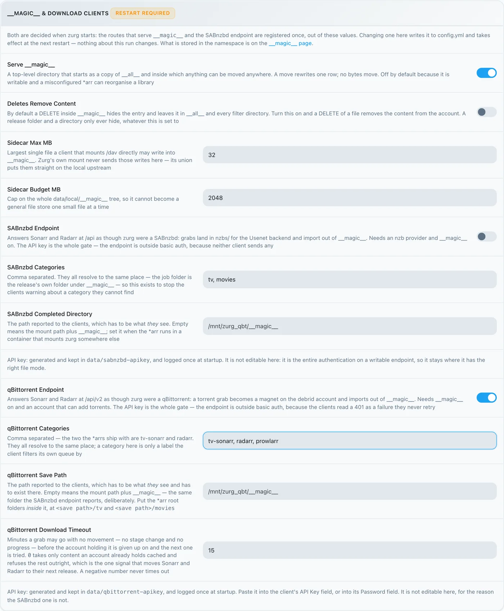
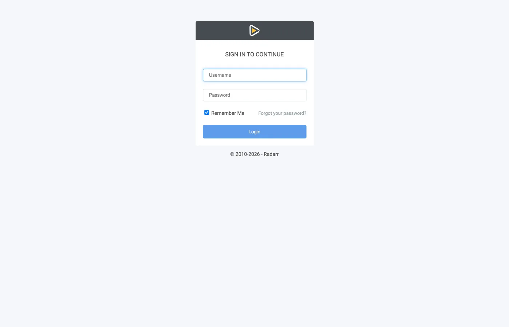
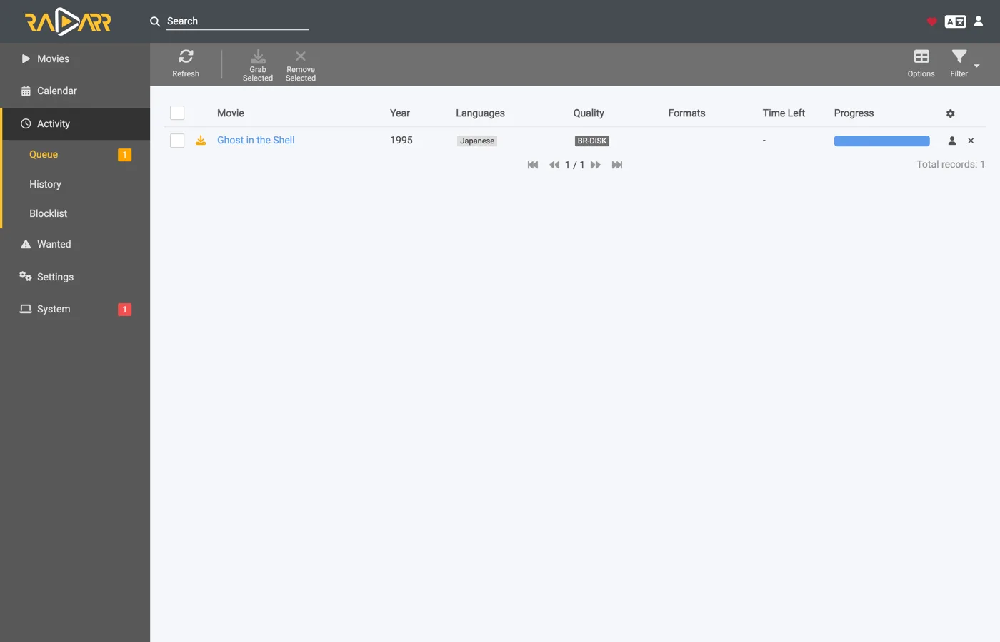
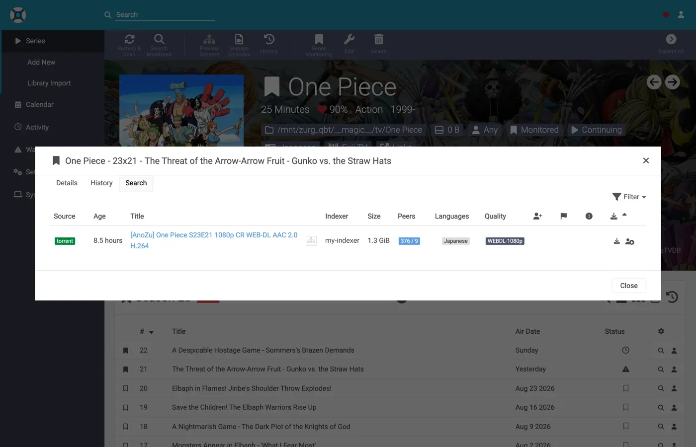
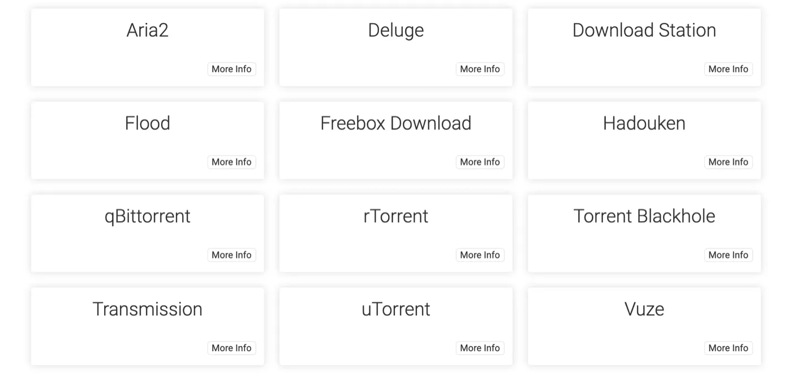

Sonarr e Radarr com torrents, passo a passo
Existem três formas de usar o Sonarr e o Radarr com o zurg. A escolha que realmente importa é quem faz a busca, o zurg ou os *arrs: qual escolher compara as opções.
As duas primeiras podem rodar lado a lado. Elas compartilham a mesma pasta __magic__.
O guia anterior apontou os *arrs para o zurg no caso do Usenet, com o zurg respondendo como um SABnzbd. Esta é a outra metade: o zurg responde como um qBittorrent, os *arrs entregam a ele um magnet ou um .torrent em vez de um NZB, e o lançamento vai para uma conta debrid em vez de um servidor de notícias. A importação é o mesmo truque — um rename dentro de __magic__, nada baixado para importar, nada copiado.
Qual dos dois o *arr envia não é um detalhe estético. Um .torrent normalmente é enviado para a conta como o próprio arquivo; só um magnet é adicionado apenas pelo info hash. No modo somente em cache, o padrão, TorBox e Debrid-Link recebem o info hash, porque é assim que recusam um lançamento sem cache sem adicioná-lo. Um magnet faz a conta descobrir o que o torrent contém a partir do hash, e o hash de um tracker privado não tem um swarm público de onde tirar essa informação. O Real-Debrid falha com magnet_error sem arquivos, e o TorBox aceita e depois fica em checking sem lista de arquivos, sem tamanho e com uma estimativa de cem dias, então a captura nem falha nem termina. O arquivo .torrent faz a consulta de cache da conta pelo hash diretamente, então o conteúdo que a conta já tem é adicionado na hora, sem nenhuma resolução de magnet. É isso que faz os indexadores privados funcionarem aqui: os lançamentos deles podem ser adicionados exatamente quando a conta já tem o conteúdo, o que, para qualquer coisa que uma comunidade compartilha, é o caso comum. Aponte o *arr para um indexador que entregue arquivos .torrent em vez de magnets. Os privados entregam.
Tudo abaixo foi capturado com o zurg 2026.08.30.0459-nightly-73-g5b4c9790, Sonarr 4.0.19.2979, Radarr 6.3.0.10514 e Prowlarr 2.5.2.5491, em uma instalação real com uma conta AllDebrid de verdade. Nomes de host e de usuário foram alterados para you@zurg-server. Os nomes dos indexadores são my-indexer. Chaves de API e contagens da biblioteca são ilustrativas. Nada além disso na saída capturada foi alterado.
Antes de começar
Três coisas precisam ser verdadeiras. Verifique as três agora. Cada uma delas falha depois com a cara de um problema não relacionado.
- o zurg tem uma conta que pode adicionar torrents — Real-Debrid, AllDebrid, TorBox, Premiumize, Debrid-Link ou Offcloud. Todos os seis aceitam o próprio arquivo
.torrentenviado, e é isso que permite adicionar o lançamento de um tracker privado. Uma conta de Usenet não aceita torrent de nenhuma forma: uma instalação cujo único provedor énzbaceita todo pedido de download e depois o recusa. O zurg avisa isso na inicialização. magic.enabledestá comotrue. Sem isso, o caminho de salvamento não existe e todas as importações falham. Veja__magic__.- O mount está visível para o *arr no caminho que o zurg informa. Se o *arr roda em um container, leia o
passo 8 antes de configurar qualquer coisa. Instalado como um app comum na mesma máquina, ele enxerga o mount onde o zurg o monta, com uma ressalva em cada sistema:- Linux: um *arr que roda com outro usuário que o zurg vê uma pasta vazia até que
user_allow_otheresteja habilitado. Veja Configuração no Linux. - macOS: rode-o com o mesmo usuário do zurg. O mount fica em
/Volumes/Zurg, a menos que você tenha alteradomount_path. - Windows: rode o Sonarr e o Radarr como app na bandeja, que o instalador oferece, e não como serviço do Windows. A unidade
Z:do zurg pertence à sessão em que você está conectado, e um serviço roda fora dessa sessão, então ele não enxerga a unidade. Veja as regras de sessão.
- Linux: um *arr que roda com outro usuário que o zurg vê uma pasta vazia até que
Verifique os dois primeiros direto no arquivo de configuração, no diretório de trabalho do zurg. No Windows, abra o config.yml no Bloco de Notas.
$ grep -A3 '^providers:' config.yml
providers:
- type: alldebrid
token: <redacted>
$ grep -A3 '^magic:' config.yml
magic:
enabled: true
allow_delete: falseA ordem da lista providers: importa aqui. Um pedido de download é oferecido a todas as contas que aceitam torrents, nessa ordem, e uma conta que recusa ou trava nele é descartada, e a próxima é tentada. Se você tem duas contas, coloque primeiro a que você prefere gastar.
Duas chaves tiram uma conta dessa ordem. watchlist: true coloca uma conta na frente, independentemente de onde ela esteja no arquivo. add_torrents: false tira uma conta da rotação por completo, então ela continua servindo e lendo a sua biblioteca, mas nada novo é mais colocado nela: é o caso de uma conta de arquivo morto, ou de uma cuja cota já está comprometida. Uma conta de Usenet nunca recebe um torrent, em nenhum dos dois casos. Ambas estão descritas em a referência de configuração.
1. Ligue o endpoint
Duas formas, mesmo resultado. As duas gravam no config.yml e as duas precisam de um reinício: as rotas que servem __magic__ e o endpoint do qBittorrent são registradas uma única vez, quando o zurg inicia.
Opção A — o painel
Abra o painel do zurg, clique em Config e role até __magic__ & Download Clients. Ative Serve __magic__ e qBittorrent Endpoint.

Config é onde a configuração fica; Magic é onde você vai acompanhar os grabs que chegarem depois.

Deixe qBittorrent Save Path vazio, a menos que o seu *arr monte o zurg em um caminho diferente do que o próprio zurg usa — veja o
Opção B — config.yml
Adicione o bloco manualmente e reinicie o zurg.
magic:
enabled: true
qbittorrent:
enabled: true
api_key: "" # empty = zurg generates one and keeps it
categories: [tv-sonarr, radarr]
save_path: "" # empty = <mount_path>/__magic__/__all__
cached_only: true # the default: only take what an account already holdsAs categorias não são pastas. Todas levam ao mesmo lugar: a pasta da própria release em __magic__/__all__. A lista só cria as categorias com antecedência: o Test de um cliente cria qualquer categoria que esteja faltando, e o zurg a guarda em data/qbittorrent-categories.json. O Prowlarr, se você usar, precisa de prowlarr. Veja o
Reinicie o zurg e depois confirme que o endpoint foi registrado e que o provedor foi aceito:

Uma linha alldebrid é tudo que o endpoint precisa: qualquer um dos seis tipos com suporte a torrent.
O log de inicialização diz as mesmas coisas, e vale a pena lê-lo uma vez:
INFO router.qbittorrent qBittorrent API on /api/v2 and /qbittorrent/api/v2, save path /mnt/zurg_qbt/__magic__/__all__, categories tv-sonarr, radarr
INFO router.qbittorrent qBittorrent: cached-only, so a grab is only accepted onto an account that already holds the content; anything else is refused and the *arr takes its next release. Set qbittorrent.cached_only: false to let accounts download
INFO router.qbittorrent qBittorrent: torrents are offered to alldebrid, in that order2. Encontre a chave de API
The API key is the entire authentication on this endpoint, so get it right once and don't paste it anywhere public.
If you left api_key empty, zurg generated one on first start and wrote it to data/qbittorrent-apikey:
$ cat data/qbittorrent-apikey
fedcba9876543210fedcba9876543210
Illustrative key — yours will differ. The file survives restarts, so the key is stable once generated.
If you set api_key yourself, it is in config.yml and no file is written.
This endpoint is outside zurg's basic auth. The *arrs authenticate to a download client the download client's own way, and their HTTP layer turns a basic-auth 401 into "unable to connect" with nothing actionable in it — so zurg deliberately exempts /api/v2. The API key is the whole gate. Treat the port the way you treat the rest of zurg's: on a trusted network, or behind something that is.
Three ways to present the key, all accepted:
Authorization: Bearer <key>— what the client sends when its API Key field is filled in. This is the recommended one; it skips the login entirely.- The key as the password on
auth/login, with any username. Use this if you would rather fill in Username and Password. - zurg's own dashboard username and password, if
username:andpassword:are set inconfig.yml.
3. Confirme que ela responde
Faça isso antes de mexer no Sonarr. Leva dez segundos e, daqui pra frente, separa "o zurg está errado" de "o *arr está errado".
$ KEY=fedcba9876543210fedcba9876543210
$ ZURG=192.168.88.244:9995
$ curl -s "http://$ZURG/api/v2/app/webapiVersion"
Forbidden
$ curl -s -H "Authorization: Bearer $KEY" "http://$ZURG/api/v2/app/webapiVersion"
2.11.2
$ curl -s -H "Authorization: Bearer $KEY" "http://$ZURG/api/v2/app/version"
v5.0.4
$ curl -s -H "Authorization: Bearer $KEY" "http://$ZURG/api/v2/app/preferences" | jq .save_path
"/mnt/zurg_qbt/__magic__/__all__"No PowerShell. Digite curl.exe, não curl: o curl do Windows PowerShell é outro comando.
PS> $KEY = "fedcba9876543210fedcba9876543210"
PS> $ZURG = "192.168.88.244:9995"
PS> curl.exe -s "http://$ZURG/api/v2/app/webapiVersion"
Forbidden
PS> curl.exe -s -H "Authorization: Bearer $KEY" "http://$ZURG/api/v2/app/webapiVersion"
2.11.2
PS> curl.exe -s -H "Authorization: Bearer $KEY" "http://$ZURG/api/v2/app/version"
v5.0.4
PS> (Invoke-RestMethod "http://$ZURG/api/v2/app/preferences" -Headers @{ Authorization = "Bearer $KEY" }).save_path
Z:/__magic__/__all__O Forbidden puro é a resposta correta. A primeira consulta dos clientes é um GET /api/v2/app/webapiVersion sem autenticação, e o qBittorrent de verdade responde 403 quando a API está lá mas ninguém fez login. Então é isso que o zurg responde, e o cliente entende como "suporta v2, agora autentique". Um 404 puro significa que qbittorrent.enabled ainda está false ou que o zurg não foi reiniciado depois que você mudou isso.
Depois, confira se uma chave errada é realmente recusada:
$ curl -s -o /dev/null -w "%{http_code}\n" -H "Authorization: Bearer wrongkey" \
"http://$ZURG/api/v2/torrents/info"
403PS> curl.exe -s -o NUL -w "%{http_code}\n" -H "Authorization: Bearer wrongkey" "http://$ZURG/api/v2/torrents/info"
403save_path é o caminho que o zurg vai entregar aos clientes. Confira agora se é um caminho que eles conseguem abrir.
As duas formas de URL funcionam, então qualquer uma serve no campo URL Base do cliente:
4. Crie as pastas raiz
Crie-as antes de adicioná-las, porque o diálogo Add Root Folder dos *arr navega pelo sistema de arquivos em tempo real e não vai oferecer uma pasta que não existe.
$ mkdir -p /mnt/zurg_qbt/__magic__/tv /mnt/zurg_qbt/__magic__/movies
$ ls -d /mnt/zurg_qbt/__magic__/tv /mnt/zurg_qbt/__magic__/movies
/mnt/zurg_qbt/__magic__/movies
/mnt/zurg_qbt/__magic__/tvPS> New-Item -ItemType Directory -Force Z:\__magic__\tv, Z:\__magic__\moviesOu crie as duas pastas no Explorer.
Substitua /mnt/zurg_qbt pelo seu próprio mount_path. Se não for definido, ele é /mnt/zurg no Linux, /Volumes/Zurg no macOS e Z: no Windows.
A pasta raiz fica ao lado do save path, não nele e nem acima dele. É a mesma regra do passo a passo de Usenet, pelo mesmo motivo: o zurg informa __magic__/__all__ como save path, os dois clientes acusam um health check quando uma pasta raiz é a pasta de saída do cliente de download, o Radarr também acusa um quando a pasta raiz contém essa pasta, e pastas irmãs não causam nenhum dos dois. Esse guia tem as capturas de tela do que acontece quando se erra.
Há um segundo motivo, específico de torrents: uma movimentação cujo destino fica fora de __magic__ é uma movimentação entre dois sistemas de arquivos, o que equivale a uma cópia, e uma cópia a partir de um mount de debrid lê a release inteira pela rede. Manter o Remove Completed ativado (
Uma movimentação entre dois volumes também é uma cópia. Isso importa no Docker. O passo 8 cobre esse ponto.
5. Adicione o cliente no Sonarr
A Sonarr recém-instalado bloqueia tudo atrás de uma tela de primeira execução. Escolha Forms (Login Page), defina um usuário e uma senha e clique em Save.

Ele não deixa você avançar até que Authentication Method esteja em outra opção que não seja None.

Depois de clicar em Save, você é desconectado uma vez e cai na página de login.

Settings → Download Clients
Vá em Settings → Download Clients. Numa instalação nova, não há nada aqui além do card +.

Clique no + em "Download Clients", e não no que fica mais abaixo em "Remote Path Mappings".
Escolha qBittorrent na coluna Torrents.

O zurg se passa especificamente por qBittorrent, então nenhum outro item desta lista vai funcionar. As duas colunas mostram qual guia você está seguindo: o SABnzbd fica em Usenet, e o qBittorrent fica em Torrents.
O diálogo abre com os padrões do próprio qBittorrent: localhost, porta 8080, sem chave.

O que colocar em cada campo

A API key mostrada é apenas ilustrativa — cole a sua.
No Docker, "localhost" e o hostname mentem. Dentro de um container, localhost é o próprio container, e o hostname da máquina normalmente resolve para 127.0.1.1 — que também é o container. O host deste rig se chama zurg-server, e zurg-server dentro do container do Sonarr resolveu para 127.0.1.1, enquanto o mesmo nome funcionava normalmente a partir do shell do host. Use o IP da LAN ou do Tailscale do host, nunca localhost e nunca o hostname puro.
Clique em Test. Um tique verde significa que as verificações do client passaram — versão da API, autenticação, a categoria e a lista de torrents.

Agora clique em Save.

6. Adicione a pasta raiz no Sonarr
Vá em Settings → Media Management e role até o final da página.

Clique em Add Root Folder. Abre um navegador de arquivos no sistema de arquivos do Sonarr, que no Docker é o do container.

Digite o caminho ou navegue até ele. Se o mount estiver realmente visível para o Sonarr, __magic__ abre e mostra o que você criou no passo 4, ao lado do __all__ que o zurg cria por conta própria. É a prova mais rápida de que o bind mount está correto.

Se estiver vazio ou der erro, pare e corrija o mount antes de seguir.

Termine o caminho em __magic__/tv (Z:\__magic__\tv no Windows) e clique em Ok.

Free Space mostrando 1 PiB é o zurg informando um sistema de arquivos virtual, não um disco. Isso é esperado, e é o que atende à verificação de espaço livre do *arr antes de um grab.
7. Faça o mesmo no Radarr
Idêntico, com dois valores alterados: a categoria é radarr e a pasta raiz é __magic__/movies.

A primeira execução do Radarr funciona do mesmo jeito: defina Forms auth e depois faça login.

Settings → Download Clients → +, depois qBittorrent em Torrents.

Mesmo host, mesma porta, mesma chave. Só o Category muda: radarr, não tv-sonarr.
Test, tique verde, Save.

Depois, Settings → Media Management → Root Folders → Add Root Folder, e adicione /mnt/zurg_qbt/__magic__/movies.
Um zurg, dois clientes, uma fila. A lista de torrents que cada cliente vê é filtrada só pela categoria, e nada mais. Dois Sonarrs usando tv-sonarr vão ver os downloads um do outro; já o Sonarr em tv-sonarr e o Radarr em radarr não. Mantenha um cliente por categoria e isso nunca vai acontecer.
8. Se o seu *arr estiver no Docker
Esta etapa é para Docker em um host Linux. No macOS e no Windows, instale os *arrs como aplicativos comuns, como descreve
São os mesmos três problemas do guia de Usenet, com as mesmas soluções, porque o mount continua sendo o mesmo. Então esta é a versão curta. O passo 8 desse guia traz os detalhes.
O caminho que o zurg informa precisa ser um caminho que o cliente consiga abrir. Se o container montar a biblioteca em um lugar diferente de onde o zurg monta, toda importação falha com download doesn't contain intermediate path ou com uma verificação de saúde de remote path. Defina qbittorrent.save_path como o caminho que o cliente enxerga, ou adicione um remote path mapping:
qbittorrent:
save_path: "/data/zurg/__magic__/__all__" # what the *arr sees, not what zurg seesUm único volume para o save path e para as root folders. Não passe __magic__/__all__ e __magic__/tv como dois volumes para o container. O rename entre eles falha dentro do container. Então o cliente copia cada importação da sua conta e grava no disco do zurg sem avisar. Use um único volume que contenha todo o mount do zurg e acesse as duas pastas por ele. O bind abaixo é esse volume.
Faça bind do pai do mount, não do ponto de montagem. Quando o zurg é reiniciado, ele desmonta e monta de novo. Um container que fez bind do próprio ponto de montagem fica com a conexão fuse morta, e todo read depois disso responde Socket not connected. Como os dois clientes verificam o espaço livre antes de enviar um grab, todo release é rejeitado em silêncio. Faça bind do pai com rslave, e a remontagem chega como um evento de sub-mount que o container acompanha. Os containers desta configuração foram iniciados antes de o zurg montar qualquer coisa, e mesmo assim o mount apareceu dentro deles:
$ docker exec sonarr df -h /mnt/zurg_qbt
Filesystem Size Used Avail Use% Mounted on
zurg{8amax}: 1.0P 0 1.0P 0% /mnt/zurg_qbt9. Acompanhe um grab passando pelo sistema
Adicione um item, faça o grab dele manualmente e acompanhe tudo até o fim. Tudo abaixo é um grab real feito com a configuração acima: Ghost in the Shell (1995), pego manualmente de um indexador.
Grab it
Abra o filme, clique em Interactive Search e escolha um lançamento.

A coluna Source mostra torrent — esse é o protocolo que este endpoint aceita. Clique no botão de seta circular no fim da linha para baixar o lançamento. Se o cliente pedir para você confirmar o mapeamento antes:

Override and Grab aparece quando o lançamento não corresponde direitinho. Confira o mapeamento e clique em Grab Release. Um download normal nunca mostra isso.
A conta pega o torrent
Três linhas no log do zurg formam a adição inteira: a conta que recebe, o job registrado e finished. A captura abaixo é de uma build mais antiga, que registrava só as duas últimas:
INFO router.qbittorrent qBittorrent: [Polarwindz] Ghost in the Shell (1995) (BD 1080p HEVC FLAC) (0c5e4077…) added to alldebrid as 720824192
INFO router.qbittorrent qBittorrent: [Polarwindz] Ghost in the Shell (1995) (BD 1080p HEVC FLAC) (0c5e4077…) finished on alldebridO hash é o info hash que o cliente enviou. added … as 720824192 é o id que a própria conta dá para ele. Esse release já estava em cache na conta, então finished aparece em cerca de um segundo. Se não estiver em cache, a conta baixa antes, e o intervalo entre as duas linhas é o tempo desse download. O que a conta está fazendo nesse intervalo é o que a fila do cliente mostra:
Um swarm parado aparece como Downloading, com a velocidade e o número de seeds em zero, e não como um aviso de stall. stalledDL é um estado que os *arrs usam para tratar downloads com falha. Um swarm sem seeds, porém, não diz nada sobre o release.
O magnet inteiro chega à conta. O zurg repassa o display name que o cliente pegou e os trackers que ele informou. Num indexador que publica só magnets, o display name é o único lugar onde o nome do release aparece. Sem ele, a TorBox lista um grab não resolvido pelo hash de quarenta caracteres enquanto os metadados continuarem sem resolver. Um .torrent já traz nome e trackers próprios, então nada é adicionado a ele. A exceção é o modo somente em cache (o padrão) na TorBox e na Debrid-Link, que são consultadas só pelo hash, já que um hit em cache volta com o nome real.
A importação acontece
Activity → Queue, depois Activity → History. Dois eventos, com segundos de diferença — Grabbed, depois Movie Imported:

Expanda a linha importada e leia os caminhos. Source é /mnt/zurg_qbt/__magic__/__all__/[Polarwindz] …/[Polarwindz] ….mkv e Imported To é /mnt/zurg_qbt/__magic__/movies/Ghost in the Shell (1995)/… — o arquivo nunca sai de __magic__, e é isso que faz a importação ser apenas um rename. A captura de tela foi feita antes de a biblioteca ser movida para dentro de __all__, então o caminho de origem dela fica um nível acima do que você vai ver.
Um grab que o cliente decide não importar fica na fila como um aviso. O que aparece na linha da fila nesta captura de tela é um upgrade que o perfil de qualidade recusou — visível, a um clique de Remove, e sem liberar nada por conta própria:


Status: Downloaded, Size 17.2 GiB — e nada foi baixado para que isso fosse verdade. Os bytes são lidos da conta quando algo reproduz o arquivo.
Confirme que o arquivo é real
Se o seu shell não encontrar ffprobe, use ~/zurg/bin/ffprobe: o setup coloca uma cópia dele ali quando nenhum foi instalado.
$ F="/mnt/zurg_qbt/__magic__/tv/One Piece/Season 23/[AnoZu] One Piece S23E21 1080p CR WEB-DL AAC 2.0 H.264.mkv"
$ ls -la "$F"
-rw-rw-r-- 1 you users 1446325722 Aug 31 00:44 …mkv
$ dd if="$F" bs=1M count=1 >/dev/null
1048576 bytes (1.0 MB, 1.0 MiB) copied, 0.00592934 s, 177 MB/s
$ ffprobe -v error -show_entries format=duration,size,format_name \
-of default=noprint_wrappers=1 "$F"
format_name=matroska,webm
duration=1415.808000
size=1446325722No PowerShell, a partir da pasta do zurg. O setup colocou bin\ffprobe.exe lá, a menos que já existisse um ffprobe no seu PATH; nesse caso, digite ffprobe no lugar:
PS> $F = Get-Item -LiteralPath "Z:\__magic__\tv\One Piece\Season 23\[AnoZu] One Piece S23E21 1080p CR WEB-DL AAC 2.0 H.264.mkv"
PS> $F.Length
1446325722
PS> bin\ffprobe.exe -v error -show_entries format=duration,size,format_name -of default=noprint_wrappers=1 $F.FullName
format_name=matroska,webm
duration=1415.808000
size=1446325722Esse é um download do Sonarr: um episódio pego do mesmo jeito, importado para tv/One Piece/Season 23/. Um Matroska de 23 minutos, lido direto da conta do debrid. Os bytes chegam quando alguma coisa os lê, e não quando o *arr faz a importação.
No Sonarr, parece igual


Os mesmos dois eventos do histórico, a mesma importação por renomeação, e uma fila que esvazia no instante em que a importação acontece. Um release em cache vai de grab até imported em alguns segundos, por isso não há aqui uma captura de tela do meio do download.
10. Prowlarr, grabs manuais
O Prowlarr fala com o mesmo endpoint. Ele compartilha o código do cliente qBittorrent com os outros dois, mas não é um importador. Ele não tem biblioteca e nunca importa nada. O que ele faz é enviar um release para a conta manualmente, que é exatamente para isso que serve o cliente de download dele.
A primeira execução do Prowlarr mostra a mesma tela de autenticação Forms das outras duas.


Vá em Settings → Download Clients → + e escolha qBittorrent. No seletor do Prowlarr, todos os clientes ficam em uma única lista em ordem alfabética, e não em duas colunas como nos *arrs. Use o mesmo host, porta e API key. Dois campos são diferentes dos *arrs:


Clique em Test, espere o tique verde e depois em Save.


Depois clique em Search, digite o que você quer e envie uma linha para o cliente:

O release vai para a conta exatamente como um grab de *arr: o mesmo caminho de adição, as mesmas categorias, a mesma pasta __magic__. Este ficou em cache e chegou a finished em menos de um segundo. Mas nada o importa. Ele fica na conta e é servido pelo mount, e é justamente esse o objetivo: o envio do Prowlarr serve para colocar isto na minha conta de debrid agora, e não para o pipeline automático de grab, importação e limpeza. Para isso, deixe Sonarr e Radarr apontados para o endpoint e deixe o Prowlarr cuidar dos indexadores.
11. Adicionando um release na mão
zurg não tem botão de adicionar no painel. Mesmo assim, você pode entregar um release para o zurg e enviá-lo para o Sonarr ou o Radarr certo. Adicione por este endpoint usando a categoria desse app. Cada app só olha para a sua própria categoria. Quatro apps com quatro categorias veem apenas os seus próprios adds.
KEY=your-qbittorrent-api-key
curl -H "Authorization: Bearer $KEY" http://localhost:9999/api/v2/torrents/add \
-F 'urls=magnet:?xt=urn:btih:<hash>&dn=Movie.Title.2012.1080p.WEB-DL' \
-F category=radarr4kNo PowerShell, com curl.exe em vez de curl:
$KEY = "your-qbittorrent-api-key"
curl.exe -H "Authorization: Bearer $KEY" http://localhost:9999/api/v2/torrents/add `
-F 'urls=magnet:?xt=urn:btih:<hash>&dn=Movie.Title.2012.1080p.WEB-DL' `
-F category=radarr4kUm arquivo .torrent também funciona. Envie como -F 'torrents=@Movie.Title.2012.1080p.WEB.torrent' no lugar de urls.
Quatro coisas decidem se o app vai importar o release.
- O filme ou a série já precisa estar nesse app. Ele importa apenas o que consegue associar a algo que ele gerencia.
- O nome precisa dizer o que é. O nome de um magnet é o
dndele. O nome de um arquivo.torrenté o nome do próprio arquivo. O zurg ignora o camporenamedo qBittorrent. O Radarr não conseguiu interpretarSintele o manteve como Unable to parse download.Sintel.2010.1080p.WEB-DLfoi importado. Coloque um ano no nome. - Acerte o nome antes que o app veja o release pela primeira vez. Depois que o Radarr marca um download como não interpretável, ele mantém esse veredito até ser reiniciado. Adicionar de novo com um nome melhor não mudou nada. Depois de um reinício, ele importou.
- A categoria é só um rótulo. Uma categoria que não está em
qbittorrent.categoriesé aceita. Ela só não aparece na lista de categorias. Você pode mover um release para outro app depois. O app que é dono da nova categoria importa o release na próxima verificação dele.
curl -H "Authorization: Bearer $KEY" http://localhost:9999/api/v2/torrents/setCategory \
-F hashes=<hash> -F category=radarrNo Windows, é o curl.exe em uma única linha, com $KEY definido como acima.
Um release que já está na sua conta funciona do mesmo jeito. Isso inclui um que você enviou para lá pelo DMM. O zurg vê que ele já está na biblioteca e o registra na categoria sem adicioná-lo de novo. Um release que você nunca adiciona por este endpoint continua invisível para o Sonarr e o Radarr. O zurg mostra a eles apenas o que passou por ele.
Medido em 2026-10-04 em uma conta AllDebrid com Radarr 6.3. Cada filme foi importado por renomeação para __magic__/movies, e nada foi copiado. Um Radarr configurado com outra categoria nunca o viu. O Sonarr não foi testado.
12. O Plex lê um conjunto de pastas
An importação não tira um lançamento das pastas do próprio zurg. Um filme que o Radarr colocou em __magic__/movies continua em movies e em __all__. Por isso o Plex precisa ler um conjunto de pastas e nunca os dois.
Se suas bibliotecas do Plex já apontam para movies e shows, deixe como está. Os downloads dos *arrs aparecem ali sem precisar mudar nada. Adicione as pastas __magic__ ao Plex só se você quiser uma biblioteca feita apenas de importações dos *arrs e, nesse caso, tire as outras pastas. Com as duas, o Plex encontra cada título duas vezes.
Nunca adicione também a raiz de __magic__. Ela contém __magic__/__all__, que é a biblioteca inteira de novo.
13. Indexadores, e o DMM para patrocinadores
Sonarr e Radarr pesquisam pelo Prowlarr. Qualquer indexador público de torrent funciona aqui, porque o zurg adiciona o magnet à sua conta de debrid. Alguns sites públicos ficam atrás do Cloudflare, e o Prowlarr se recusa a adicioná-los sem o FlareSolverr. Pule esses.
Se você apoia o zurg, o DMM também é um indexador. Ele pesquisa em toda a biblioteca do DMM e coloca no topo o que a sua conta de debrid já tem. Esses downloads são instantâneos.
- Pegue sua chave de API do DMM no gatekeeper: clique em Connect GitHub e, se você apoia pelo Patreon, vincule o Patreon depois disso. Copie a DMM API key que aparecer. Esta não é a chave do zurg do
passo 2 . Essa mesma chave também serve para o indexador Usenet do DMM, configurado em debridmediamanager.com/newznab. - No Prowlarr, abra Indexers → Add Indexer e escolha Generic Torznab.
- Coloque a URL da sua conta e a chave. Deixe o API Path como
/api.
TorBox e Premiumize precisam que a chave desse serviço esteja vinculada antes no DMM. A página do DMM mostra onde fazer isso. Adicione /cached no fim da URL para deixar de fora o que a sua conta ainda não tem.
O Prowlarr testa o indexador quando você salva. Se a chave for recusada, a sponsorship expirou ou a chave está errada, e o erro diz qual dos dois. Depois disso, o Prowlarr entrega o DMM para o Sonarr e o Radarr sozinho. Uma chave permite 20 pesquisas por minuto somando todos os seus apps.
14. Sua watchlist do Plex
Sonarr e Radarr conseguem seguir a sua watchlist do Plex. Tudo o que você adicionar no Plex é adicionado e pesquisado, e chega pelo zurg como qualquer outro download.
Em cada app, abra Settings → Import Lists → + → Plex Watchlist e clique em Authenticate with Plex.tv. Defina a root folder como sua pasta __magic__ e ative o search on add. O Radarr pega os filmes da lista e o Sonarr pega as séries.
O zurg tem uma watchlist própria que baixa a partir de indexadores que você configura diretamente no zurg. Use uma ou outra. Com as duas ativas, o mesmo título é baixado duas vezes.
Para seguir outras listas, como uma lista por gênero, veja Listas no Sonarr e Radarr.
Se a importação copiar em vez de mover
Tudo acima depende de a importação ser um rename (renomear). Duas coisas decidem isso. Uma é como o container chega ao mount, e só você pode mudar isso. Um caminho de salvamento e as pastas raiz em dois volumes fazem uma cópia de cada importação, não importa o que mais esteja configurado. O
O cliente só move um arquivo importado quando acredita que pode remover o download depois, o que exige três coisas ao mesmo tempo: Remove Completed ligado, um torrent finalizado e pausado, e um limite de seed que ele consegue ver como atingido. O zurg informa os dois últimos exatamente como precisam ser: todo torrent concluído volta pausado, com ratio 0 contra um limite de ratio 0. Remove Completed é a que cabe a você.
Com ela desligada, o cliente copia. E, em um mount de debrid, copiar significa ler cada byte do release pela rede e gravá-lo no disco local. O release do passo 9 deixaria de ser um rename que não moveu nada e viraria um download de 17 GiB só para importar um arquivo que já estava lá.
O zurg liga a opção de novo quando tem a API key do *arr, por meio de uma fonte Radarr ou Sonarr (basta uma com enabled: false) ou pelo banner do dashboard que pede a chave. Ele verifica na inicialização, a cada dez minutos e quando o *arr chama o zurg pela primeira vez, e liga Remove Completed pela própria API do *arr. Um cliente que falha no próprio Test não pode ser alterado, e o zurg mantém um aviso com o motivo.
O *arr não informa se houve cópia. A importação aparece como bem-sucedida de qualquer jeito. Um move aparece como uma linha MOVE __magic__ no log do zurg. Uma cópia pelo mount próprio do zurg cai em data/local, e o zurg a encontra ali em cerca de dois minutos, transforma de volta em uma placement, apaga a cópia e registra A client copied … com um banner no dashboard. Uma cópia por um mount seu é um PUT com o número total de bytes do release, que o zurg recusa. O download que a cópia usou não tem como ser devolvido.
Use Hardlinks instead of Copy não substitui essa opção: o cliente só consulta essa configuração depois de já ter decidido copiar, então ela não consegue transformar uma cópia em um move.
Timeouts e modo somente em cache
Por padrão, o zurg só aceita um pedido se a conta já tiver o conteúdo em cache. Se você desligar isso, um pedido sem cache é baixado na conta, e um que para de avançar é removido dessa conta e passado para a próxima.
qbittorrent:
cached_only: true
download_timeout_mins: 15Configs antigas. Antes de cached_only existir, o modo só com cache era escrito como download_timeout_mins: 0. Uma config que escreve download_timeout_mins e não cached_only mantém esse significado: 0 é só com cache e qualquer outro valor baixa. Quando as duas aparecem e não batem, cached_only prevalece e o zurg registra um aviso na inicialização.
O que conta como avançar é uma mudança de etapa ou um aumento no progresso, avaliado pela fração bruta que a conta informa, e não pela porcentagem inteira. Um por cento de um lançamento de 100 GB são um gigabyte. Um lançamento que a conta está descompactando fica fora do cronômetro: essa etapa fica no mesmo número pelo tempo que for preciso.
Quinze foi medido, não escolhido. A AllDebrid coloca um job saudável na própria fila com todos os contadores em zero. Em duas execuções de duas, ele ficou ali por 580 e 622 segundos antes de começar a baixar em segundos e terminar. Um padrão de dez minutos teria abandonado os dois. As capturas, e a tabela que mapeia as palavras de cada conta para os cinco estados que os *arrs entendem, estão em Ciclo de vida do torrent.
O que um timeout apaga. A instância nessa conta, e só ela: a remoção atinge uma instância que o zurg adicionou por conta própria para esse pedido e que nunca terminou, e mais nada. Quando não sobra nenhuma conta, o pedido é reportado com erro, com um motivo que cita todas as contas e o que aconteceu em cada uma.
Um torrent que você apaga na mão, na conta, passa o pedido para a próxima conta imediatamente. Os seis serviços avisam claramente quando um torrent sumiu.
A adição inteira tem orçamento de 75 segundos. Os *arrs cancelam um torrents/add aos 100 segundos e informam o estouro como falha de conexão, sem jeito de aumentar esse limite. Todas as contas dividem o mesmo prazo, então três contas cabem com folga, e uma quarta recebe só o que as três primeiras não gastaram.
O modo só com cache recusa dentro da adição, e essa recusa é o único sinal em que os *arrs agem: eles marcam o pedido como falho e passam para o próximo lançamento da lista. Tudo depois da adição chega até eles como um aviso de download em andamento, e eles ficam esperando. Veja como cada conta é consultada:
O zurg não consulta o checkcached da TorBox nem as outras buscas de cache. Elas dizem se o serviço tem o conteúdo, não se a sua conta acaba com uma cópia utilizável.
O que funciona e o que não funciona
Funciona:
- O teste de conexão nos três clientes: versão da API, autenticação, a categoria e a lista de torrents.
- Captura, fila, histórico, importação por renomeação e a limpeza pós-importação, no Sonarr e no Radarr.
- Recaptura de um release que a conta já tem. O *arr recebe de volta o torrent concluído e o importa; a conta mantém uma única cópia.
- Várias contas: uma captura é oferecida a cada uma na ordem de
providers:, e uma recusa ou um travamento passa para a próxima. - Envio manual de um release a partir do Prowlarr.
Não funciona:
- A interface Web do qBittorrent. Isto é só a API; não há página para abrir.
- Seeding, fila e prioridades. Não existe swarm. Pausar, forçar início, reprioritizar, recheck, relocate e limites de compartilhamento são aceitos, mas não fazem nada.
- Falha como estado de primeira classe. A API do qBittorrent não tem como dizer que um download falhou, então um release que nenhuma conta aceita chega ao *arr como um warning, nunca como entrada na lista de bloqueio. Ele aparece na fila com o motivo anexado, a um clique de Remove → Blocklist and Search, mas não se limpa sozinho e ninguém recaptura sem supervisão. Essa é a diferença real em relação ao endpoint do SABnzbd, que consegue informar que um job falhou e fazer o cliente reagir.
- Adição por URL HTTP simples.
torrents/addaceita magnets e arquivos.torrentenviados. Os dois *arrs enviam um desses; umhttp://…/x.torrentpuro é recusado. - O desafio de login do painel do zurg no endpoint. Ele não é aplicado; o endpoint aceita a chave de API (como token bearer, a senha de login ou um cabeçalho Basic) ou o usuário e a senha do painel do zurg.
Uma captura some da fila em vez de mostrar aviso. Se nenhuma conta chegou a pegar o release — nenhuma tem o hash e nenhuma o está buscando — ele é reportado com erro após dez minutos e removido da lista de torrents depois de um dia. Não há download para informar um estado, e uma entrada de fila para algo que não existe é pior do que nenhuma. Todas as outras falhas continuam visíveis.
Nomes de release bloqueados, só no Real-Debrid. O RD recusa alguns releases só pelo nome. Desde 14 de outubro de 2026 são onze strings. WEB-DL, WEB.x264 e WEB.H264 valem só exatamente nessa grafia, então web-dl, Web-Dl e o WEB.h264 da scene são aceitos. WEBRip, BDRip, HDRip, DVDRip, HDTV.x264, HDTV.XviD, BluRay.x264 e p.BluRay.DTS valem em qualquer grafia. Esse último precisa de um p logo antes, como em 1080p.BluRay.DTS. Um release 2002.BluRay.DTS é aceito. O zurg conhece os padrões e pula o Real-Debrid para esse nome sem consultá-lo, oferecendo a captura à próxima conta. Só com o Real-Debrid, a captura é recusada na hora e o cliente pega o próximo release. No TorBox e no AllDebrid o mesmo release é adicionado normalmente.
Solução de problemas
Ainda com problemas? Pergunte no fórum zurg-support no Discord. Getting help explica o que incluir.
Onde o estado fica guardado
A página __magic__ no dashboard do zurg mostra os resultados das importações: colocações são arquivos que os clientes moveram, lápides são as pastas de jobs que eles apagaram depois, e os releases que o endpoint pegou aparecem como linhas ao lado das pastas de onde foram importados.


A referência tem todas as chaves qbittorrent:, e o contrato do cliente — escrito com base no código-fonte do Sonarr e do Radarr — é a especificação a que o endpoint responde, com o arquivo e a linha de cada afirmação.